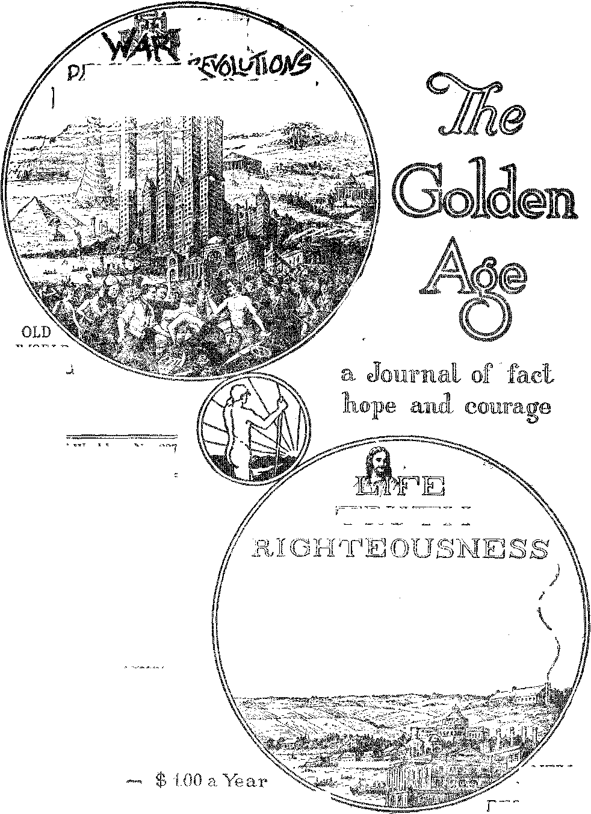

AN OUTSIDER
PROSPERITY SURE
PENSIONS AND OLD AGE INSURANCE
Vol. IX Bi-Weekly Na 227
May 30, 1928
a
TBUTH
WORLD
DYING
NEWFOUNDLAND
AS SEEN BY
POPULAR FALLACIES
z NEV WCRLD BEGINNING
Labor and Economics “Some New Thing” ................. 552
Department of Public Welfare ............. 552
Pennsylvania’s Reign of Terror ............. 554
Menand Monkeys (Poem) ............... 55'7
Social and Educational
A Brief Statement ok B'acts .............. 564
Doubling Eveby Four Hundred Years ........... 564
One Out o» These .................. 565
Finance—Commerce—Transportation
Pensions and Old Age Insurance ............ 547
As to Service Charges ................. 564
Political—Domestic and Foreign
Russia Persecuting Zionists .............. 552
Egyptian Situation May Start Holy War ......... 552
Achievements in Haiti ................ 555
Germany’s Film Scandal ............... 555
The Corridor Across Arabia .............. 556
Teapot Dome Still Boils ............... 563
What's in a Nams! ................... 564
Science and Invention The Radio Station I W’ant ............... 562
Home and Health
Amputating and Amputation .............. 564, The Hobuobs of Vivisection ............... 565
. Travel and Miscellany
Newfoundland as Seen by an Outsider .......... 549
Whales in New York Harbor ............ . 553
Where Darwin Got His Idea ............... 569
Religion and Philosophy
Bible Questions and Answers .............. 559
Church and State Not Separated ............ 559
Chinese Christians Like Western Ones ......... 564 Prosperity Sure (Part Three) .............. 566 Popular Fallacies Concerning the Bible ......... 570 The Children’s Own Radio Story ............ 575
Published every other Wednesday at 117 Adams Street, Brooklyn, N. Y., IT. S. A., by WOODWORTH, KNORR & MARTIN
0®p<srtners and. Proprietors Address: 117 Adams Street, Brooklyn, N. Y., ” B. A, CLAYTON J. WOODWORTH .. Editor ROBERT J. MARTIN .. Business Manager NATHAN H. KNORR .. Secretary and Treasurer
Vm Cents a Copy—$1.00 A Year Make Remittances to THS GOLDETS AGE
Wotiee to Sahscrihers: We do not, as a rule, send an acknowledgment of a renewal or a new subscription. A renewal blank (carrying notice of expiration) is sent with the jourml one month before the subscription expires. Change of address, when requested, may be expected to appear on address label within one month.
Foreign Offices
British ....... 34 Craven Terrace, Loudon, W. 2, England Canadim ..... 40 Irwin Avenue, Toronto 5, Ontario, Canada Australasim. ..... 405 Collins Street, Melbourne, Australia. South African ..... 6 Lelie Street, Cape Town, South Africa
Watered as second-class matter at Brooklyn, N. under the Act of March 3, 1878.
Volume iX Brooklyn, N. Y-, Wednesday, May 30, 192B Number 227
BETTER far a system of civilization that automatically operates so that those willing to work need never call for aid or feel the necessity of asking for pensions (charity) from anybody. But since there is so much of selfishness, oppression and injustice on the part of the strong it is not to bo wondered at that pensions occupy an ever larger place in ilie public mind. Pensions are for the weak and oppressed.
Insurance for old age (any system by which the individual pays part of the cost of taking care of him in his old age) is quite a different matter. It is not a matter of charity. It is a business proposition, and should be so considered. Nevertheless the two subjects are woven together so closely that they can not well be treated separately.
The current idea of the British "'dole'’, as it is improperly called, is grossly unjust to the self-respecting Britishers that years ago contributed a percentage of their wages to .build up the funds now being drawn upon for their needs. It is true that they are sometimes forced to overdraw their “dole” accounts, but they are expected to repay these sums, and do repay them. The “dole” is not charity; it is business.
Britain’s stupendous losses in the World War Lave given her a great pension bnrdmi to carry. So closely are pensions figured that the amount of pension given for an amputated limb is graduated on the actual length, measured in inches, of the remaining stump. One person in every twenty-six in Great Britain is on the World War pension roll. The total of 1,665,000 such pensioners includes 489,500 men, 1,100 ■nurses and 482,000 widows and parents of men who died from war disabilities.
Besides the foregoing, .1,250,000 aged in Britain receive Old Age Contributory Pensions, paid regularly, through the post office, at the rate of $2.50 per week, regardless of any income they may receive from other sources.
In all, fifteen million Britishers, men, women and children, one-third of the total population, are insured against the worst effects of ill health, unemployment, accident, old age and loss of their natural protectors. When first proposed the various laws which have brought this arrangement into existence were strongly denounced as socialistic, but they are now generally accepted as wise and needful under present conditions.
In Canada, Australia, New Zealand
IN CANADA, Australia and New Zealand, disabled soldiers and their dependents are being well taken care of. In British Columbia there is a maximum old age pension of $240 a year, reduced wdiere the applicant’s present assured income totals $125 a year and up. The Canadian Government pays half of this insurance, and British Columbia half. Beneficiaries must be British subjects who have resided in Canada twenty years, and in British Columbia live years. Other Canadian provinces are expected to follow7 British Columbia’s example soon.
In Australia, pensions are paid to invalids; They are paid to persons over sixteen years of age who are permanently incapacitated for work and became so incapacitated while in Australia. The rate is fixed at $260 per annum or less, as decided by the pension commissioner or his deputy. Old age pensions are granted upon application to persons sixty-five years of age who have lived in Australia twenty years.
In New7 Zealand, old age pensions up to $215 a year are payable to all persons, except Asiatics, reaching sixty-five years of age, who have resided in New Zealand for twenty years and 'during the last five years of that time have lived a sober and reputable life.
S47
In France and Germany, old age insurance is in effect. The pensioner is required to contribute during his productive years, the .government and the employer each contributing also to the pension fund.
Military Pensions in United States
THE War of the Revolution ended in 1784.
The last pensioner of that war, a daughter of Jonathan Wooley, died in 1911, one hundred twenty-six years afterward.
The War of 1812 was settled one hundred fifteen years ago, yet there are twenty widows of that war still on the pension roll.
Less than two years ago there were still living nine soldiers of the Mexican War of 1848, and about a thousand widow's of Mexican War soldiers are receiving pensions.
Seven billion dollars in pensions has been paid on. account of the Civil War, which ended fifty-three years ago; and there are still over 100,000 pensioned soldiers surviving, and over 220,000 widows.
In addition to the foregoing, the United States Government is paying pensions to soldiers, widows, children, mothers, fathers, brothers and sisters on account of Indian wars, the Spanish. War, the World War and the various private wars and bankers’ wars, until the total pension roll now numbers more than half a million. The average pension is about $500 a year.
As to Old Age Pensions '
ONCE he is retired it is well-nigh impossible for an old man to obtain work of any kind; yet there are hosts of employers today that will not hire any man over forty-five years of age, so that more and more capable men. are being pressed into the ranks of those for whom some provision must be made.
Henry Ford believes in giving old men a chance. In one factory he has at work ninety-one men aged from seventy to eighty-eight years. A writer in The Dearborn Independent says that the greatest dread of these men is not death, but the inability to continue their daily work. In this connection tW same writer says:
Every active, normal individual knows that the surest proof against minor ailments, mental and physical, is Work. It matters not in what field a person’s interest lies, be it the erection of skyscrapers, or the painting of china, let him rise at his- wonted hour of the morning, proceed to his place of business, and engage in his task; the neuralgia or indigestion which threatened on his arising will then either disappear or become endurable. In the same maimer, but to a vastly greater degree, this panacea, work, operates to delay the encroachment of old age. Remove it from a young man and he becomes prematurely old; remove it from an old man. and he becomes senile.
As a first point it would seem that, before we begin talking about old age pensions and charity we had better begin talking about justice. Not all men and women are prudent, to be sure; but given some better system than, the accursed interest system, there would be less need for any kind of charity. The poor-house is a poor substitute for justice.
Insurance actuaries predict the expectancy of .100 men. at age 25 to be as follows after forty years: 1 rich, 3 well to do, 8 comfortable, 32 dead (also comfortable) and 56 wholly or partly dependent upon others for support. Many aged people deprive themselves of heat and every possible comfort rather than betray their needs to others. -
Private or employer’s pensions are inadequate and impractical. Only four percent of male workers remain with the same employer twenty years or more, so that industrial pensions do not, as a rule, reach any considerable proportion of the population that must be cared for. Moreover, the courts have ruled that a corporation is not responsible for the payment of old age pensions when its pension fund is exhausted, regardless of any promises it may have made.
Some Old Age Pension Legislation
IN THE United States, federal judges who have served ten years or more may retire at the age of seventy, and continue to draw full pay. Eight states have similar pension arrangements for their retired judges. But judges constitute but a small :prpppitioiKpf4he>-two-- millions< dependent aged thaU'biib.....tb-: be ■ OrecT fbri ........
Six states have some other old age pension arrangements. In Montana and Nevada, persons over seventy years whose income does not exceed $300 a year are entitled to $25 a month. In Pennsylvania, a constitutional amendment that ’would permit old age pension legislation was defeated by the republican political mav chine, the State Manufacturers’ Association and the State Chamber of Commerce.
The national government has an old age pension system, or rather an old age insurance system. Employes contribute 3|% of their-wages or salaries and may receive retirement pensions up to $1,000 a year. Before the adoption of this system it was not uncommon in Washington for employes of eighty to be driven to work, lifted out of their carriages and taken to their offices in wheel-chairs.
As a general thing American business men think little of any plan of doing anything for the aged, preferring the well known and heartless American plan indicated by the motto, “Every man for himself, and the devil take the hindmost.'’ Not a pretty motto, but a. pretty good likeness of American opinion on this subject.
Some Private Old Age Pensions
MINISTERS of various denominations are paid varying sums as old age pensions, on .t'iie principle that their parishioners did not give them enough to live on during their productive years and to save anything for the future. More and more ministers are seeing that the apostolic example of hustling for one's daily bread during the week makes the best basis for good sermons. A man who does not live as other men must, does not know how to advise other men how they should live. That is perfectly obvious.
Mr. Carnegie has taken care of the retiring college professors. Indeed, the fund which he set aside for their maintenance has actually increased, so that there is now more to do with than there was in the first place.
The Paris Municipal Council has unanimously adopted a proposal to create ten pensions a year for aged artists and writers who have done their work in .Paris. This is on the ground that, as a rule, life is hard for this highly valued class of workers. That is to say, they are highly valued by their fellows for what they have contributed to human happiness, but the valuation does not take the form of dollars and cents.
Under our present civilization the highest rewards are often for those whose only service is to prey upon the weak and helpless, and to use political, financial and other great powers, especially ecclesiastical, for their own ends. “A better day is coining, a morning promised long.”
Newfoundland as Seen By an Outsider By IL L. Stewart
npijERE have appeared in The Golden Age from lime to time articles descriptive of other lands, so I thought it might be of interest to your readers to hoar some news from this somewhat remote eastern, island of the sea.
This rugged country, with a population of two hundred fifty-seven, thousand people, is unique in many ways. Being almost triangular in shape, and with its six thousand miles of coast-line, indented with hays reaching far inland, it lias often been called “The Fishermen's Paradise’’.
The irregularities of the coast are known as coves, arms, bights, tickles and harbors. The interior of the country is practically uninhabited, with the exception of a small portion of land adjacent to the railway lines. St. John’s is the chief and only city, having a population of some thirty-five thousand people. There are a few towns throughout the island each with several thousand residents. Outside of these the towns arc small and very scattered, generally extending over two or three miles along the water front.
Transportation facilities are limited. One cross-country railway line extends from St. John’s to Port-Aux-Basque, a distance of five hundred forty-seven miles. One never gets dizzy because of the high rate of speed on this line. They make it in thirty hours, which is an average of eighteen miles per hour, including stops.
Five other branch lines are operated and connect with the main line. The branch lines do not attain such a dangerous rate of speed. All the railway lines are of the narrow-guage type and a person feels cramped at times, especially when he thinks of some of the great fliers of Canada and the United States.
The railway service is augmented by five coastal steamers which ply weekly or bi-weekly supplying the needs of the outports. There is every accommodation on these boats. They are well adapted to the service in which they are engaged.
The only street ear service on the island of Newfoundland is in St. John’s, and for a nickel these cars give one a ride with transfer privileges. However, there is another means of travel, which is of outstanding interest to the stranger here; that is, the dog teams. From two to twelve dogs are used in a team, according to the load. The dog teams have the right of way over all other traffic in the street, being similar in this respect to our fire brigades in America. These teams travel along at a high speed, the 'drivers shouting “Ganyway”, which means that pedestrians must give them the road or take the consequences, as the dogs see nothing but a square meal when their journey is ended.
Contrary to the general belief, the Newfoundland dogs are quiet and good-natured. In this respect they are very different from the dogs referred to by the Prophet Isaiah, of which canine stock we have a plentiful supply on hand and these are inclined to be vicious at times, especially if inroads are being made on the pastures which they guard.
While speaking of transportation we have on several occasions seen goats hauling loads of wood or water. It might not be amiss to mention that those goats are of the barnyard variety, and hence are of an amiable and obliging disposition.
■ There are very few auto roads in the country, St. John’s and district being practically the only part of the island where autos can be used to advantage. There are fewer than two thousand cars licensed. The appearance of the motor boat has materially lessened the burden of the fishermen. Formerly they, as it were, “paddled their own canoe.”
The scenery in places is magnificent. Little lakes nestled in the hills and mountains present a qu|et and restful scene. The hills are invariably covered with evergreens. The country abounds with lakes and rivers, many of which could be harnessed to give unlimited power.
The climate is rather changeable and very unpleasant. The spring and fall seasons are long and drawn out, while the winter and summer are short. There is usually a great fall of snow in the winter, sometimes reaching a depth of ten feet. The temperature rarely drops lower than fifteen below’ zero, and there is much damp, foggy weather for days at a time, also heavy rainfalls.
The chief industry of the country is cod fishing. The waters abound with cod. Herring, salmon and lobsttws are also obtained. The chief markets for their fish are Spain and England. The fishermen endure much hardship in the prosecution of their vocation. There are two whaling stations on the island and these provide interesting work for a number of the men.
The seal fishing is carried on with much enthusiasm during the open season, commencing March 13 and extending on into April. Usually six or seven large ships leave St. John’s for the ice where the seals are found. They return in about a month’s time loaded down with seal skins and fat. The departure of the sealing fleet from St. John’s is always hailed as a “red letter day”. Each ship usually obtains from ten to t-wenty thousand hides.
There are two pulp and paper mills operating day and night at the towns of Grand Falls and Corner Brook. These two mills give employment to some eight, thousand men. The paper for the printing of the London Times is supplied by these mills. As to other resources there are minerals of great quality and quantity but they have not yet been developed to any great extent.
Our Canadian and American friends could well benefit by the thrift of the people here. Each family has its own sheep, does its own spinning and knitting, and makes practically all its own clothing and shoes. The women are especially noted for the making of beautiful mats, which find ready sale among the tourists. The women are sticklers for headship and always recognize the “skipper” as the head of the house.
The people in general are very honest and. trustworthy; hence the policemen find very little to do in the way of preserving order. The country is liberally supplied with wild fruit, chief of which are blueberry, marshberry, partridgeberry and bakeapple. The larger fruits, oranges, apples, bananas, etc., have to be imported, but the prices are so exorbitant as to put these fruits quite out of reach of the common people.
The country is rough and rugged and has very little agricultural land; hence very few cattle are kept: the cows are chiefly of the tin can type. This causes a lack of the nourishing foods of butter and milk and, together -with the small quantity of fruits obtainable, results in a great deal of tuberculosis. The continual exposure of the folks to wet and cold in their open boats hastens them on to this dread disease. The death rate is high, as figures show.
■ One creditable feature in comieCtion therewith is the system whereby the sick are cared for. .A. doctor is stationed in a certain district and each family pays a stipulated sum (usually eight dollars per year) and is then entitled to free service, paying only for their drugs or medicine. One failing, however, we might mention with propriety, is the neglect of proper ventilation and sanitation about the homes.
Following upon this subject of health and hygiene I might mention the fact that it does not cost as much here to die and be disposed of as it does in America. Very few outport residents require the services of an undertaker. Some of the neighbors usually make a casket for the deceased and have it neatly finished with the necessary material. The total cost of burial rarely exceeds twenty dollars, and often a very decent funeral is held at an expense of ten dollars. Inasmuch as “the dead know not anything”, no doubt they sleep just as well in a ten-dollar casket as in one which costs several hundred dollars.
Education is provided by the leading religious organizations, each church controlling its own school instead of such schools being operated by the government. As a result the masses are kept in ignorance, which by no means results to the welfare of the country. Tn many districts the schools are closed during the winter months.
As newspapers are scarce, only two dailies being printed in St. John's and about five other locals elsewhere, each post office provides a public news service which gives the outstanding news each day as received by wire from St. John's. This is recorded in a book which is open to the public in general. 'Telegrams of ton words can be sent anywhere in Newfoundland for twenty-five cents.
Radio is yet in its infancy, with only one station now in operation, but others are .in sight. There are very few receiving sets outside of St. John’s, and not many there.
Newfoundland is the smallest self-governing dominion of the British Empire. The affairs of the island are managed by a parliament of thirty-six members. If governed at the same ratio, Canada would have thirteen hundred members and the United States fifteen thousand.
Harbour Grace, a town of some six thousand people, has come into prominence recently, it being the stopping-off place for trans-.Atlan.ti® flights.
The people here are inclined to be serious and spiritually-minded, which condition no doubt is induced by their hazartlous and dangerous calling. (We have just heard today that more Newfoundlanders are lying in the sea than in the land cemeteries.) This .religious inclination has made them an easy prey to the various church systems.
The people are beginning to recognize the oppression under which they are laboring and in many cases welcome the message of deliverance and freedom, fllhis makes it difficult for the various systems to carry on, and the churches are resorting to all sorts of methods to raise money. The latest that has come to our attention is that the ladies make aprons to be sold at the church fair. In the pocket is found this verse:
“Measure the waist line inch by inch
And make sure the tape line does not pinch.*
You are supposed to give one cent .for each inch of the waist line. How embarrassing to the stout ladies! Then, again, another method calls for one cent for each year of your life. How this shocks the modesty of our “old maids"! One of the leading churches charges five cents a glass for the wine used at the communion table. Teas, bazaars, socials and other money-raising schemes are the order of the day. Of course this equally applies to all other countries.
Hell fire is still smouldering here in places, but in the past year some thousands of fire-extinguishers {What Say the Scriptures About JI ell?) have been effectually used and have had a decidedly dampening effect on that teaching. The various churches control the cemeteries, as well as the schools, another wily method of keeping the people in subjection.
The .Newfoundlanders in general appreciate the message of the kingdom which is being put forth by the International Bible Students. This work is not accomplished without strong opposition from the religious leaders; nevertheless the message goes forth. In the past year over ten thousand printed sermons about the kingdom have been placed in the homes of the people. Also lectures have been given in most of the towns. At these meetings in almost every instance we had capacity houses.
. Iii concluding let me say that our hearts rejoice in the prospect of that grand and glorious kingdom soon to be established — a kingdom ’ which shall he a boon not only to Newfoundland but to the whole world. The people of this country (with very few exceptions) have shown us much kindness and hospitality and will, without doubt, receive a rich recompense from Him who says, ‘'Whosoever shall give you a cup of water to drink in my name, because ye belong to Christ, verily I say unto you he shall not lose his reward.’
Russia Persecuting Zionists
RUSSIA continues persecuting Zionists. Of one hundred recently arrested in the
Ukraine only six were allowed to emigrate Palestine. The rest were exiled to Siberia.
Married One Hundred Years
to
A LONDON dispatch reports the death at Lisko, Poland, of a Jew named Leib Field, 125 years old. Mr. Field had been happily married for over a century. His wife, now 119 years old, still survives, as do six children, the youngest of whom is now eighty years old.
Effect of Rest Periods
AN ENGLISH company with an average output per worker of sixteen pieces of tinplate per hour installed rest periods of two minutes after’ • each ten-minute period of labor, with, the result that the average output per worker was increased to twenty-five pieces per hour.
Department of Public Welfare
THE Department of Public 'Welfare of New
York city sets aside $65,000 as appropriations for Protestant charitable institutions, $1,305,000 for Jewish institutions and $4,112,000 for Roman Catholic institutions. The Roman Catholics are estimated to have 25% of the population of the city and receive just 75% of the allowances for charity. The disposition of these funds is not open to inspection or examination.
Irreverence in Peru . '
A PROTESTANT missionary working in
Lima, Peru, reports shocking irreverence for all things religious. A saloon in the city is called the Jesus of Nazareth saloon, and a brand of cigarettes is advertised by pictures of Christ himself smoking a cigarette. Peru has been a supposedly Christian country for four hundred years.
England’s Hornet Plane
TpNG-LAND has a new hornet type of airplane, AH huilt to carry one slender man, and to rise live miles in ten minutes. If England is attacked the drivers of these planes will seek their enemies, and, if no other means succeeds, will be expected to drive their machines full tilt into their opponents, the aviators leaping in their parachutes immediately before the impact of the two machines. Nice job for somebody. Applicants please apply at once.
French Hatters Disturbed
TpRENCH hatters are reported as disturbed because the masculine habit of going without hats, started in America about ten years ago, has reached Paris. The hatters argue that the men must necessarily wear hats, so that they can tip them to the ladies, but it will take bettor arguments than that to hold them in place. When the present generation, of bald heads has passed out there will probably be no more, for men will cease wearing the things that have caused the baldness. Hats wall be a thing of the past.
Egyptian Situation May Start Holy War
TpGYPT lias ref used to sign any treaty with AJ Britain which does not grant her absolute independence, and she rejects England”s right to control Egyptian police or maintain British troops in Egypt. On the other hand, Britain has firmly stated her intention to keep her troops there, on account of the Suez canal, and to take a hand in the control of the police. Observers think it possible that a holy war may start from this impasse. Students confuse the Americans, with the British and have attacked two American universities. When Britain promised to evacuate Egypt she never intended to carry out her promise.
Honesty of Mexicans
IN TESTIMONY before the House Committee
on Immigration, A. C. Hardison, prominent fruit grower of California, made the statement that in the building and loan association of ■ which he is a director it has been the experience that Mexican borrowers are more considerate and attentive to the repayment of their loans than are the Americans. _
Canadian Trains Radio Equipped
ALTHOUGH a few trains in the United
States are radio equipped, and have been so for some years, yet Canada leads in this, and on the government-owned roads of the Dominion there are now seventy-six cars provided with receiving apparatus and operators to provide entertainment for the passengers enroute. The service is uniformly good.
Better Way to Jack up a Car
A TWELVE-YEAR-OLD boy in Montclair has invented a better way to jack up a car. The jack can be put anywhere under a rod nineteen inches long, which is quickly slipped into position in a clip placed over the spring. It is reported that several automobile concerns will make use of the new device, wdiich is astonishing in its simplicity.
Private Lands in National Parks
HPHE public in general is only now learning that in several of the national parks there are private lands, the owners of which may do with them as they please. Thus in the heart of Yosemite National Park there are 11,000 acres of such lands, which, unless something is done to prevent it, will be robbed of their giant trees and made an eyesore to visitors.
Political Parties in Poland
AN ODD situation exists in Poland, where, at ■ the recent election, thirty-four parties were in the field for the 454 seats in the national parliament. It should not be thought, however, that these are all the parties there are in Poland, because, at a recent municipal election in Warsaw, there were sixty-eight tickets in the field. "
Kemal’s Picture on Turkish Money
THE Mohammedan religion forbids the mak
ing of portraits but now the Turkish people are compelled to carry about with them a currency which is decorated with the picture of Kemal Pasha. Today every school, club and public office in Turkey, and almost every home, has its picture of Kemal, all glorious in his silk hat.
Get Your Parachute Ready
rPHREE young German scientists have swung •*- a cable between twTo mountain tops in Switzerland and announce that some time this summer, when a raging thunderstorm is under way, they expect to draw five or six million volts of lightning out of the sky at one time and then see what happens. They expect that the power will split the atom and might possibly release " a force which, if it got beyond their control, would blow the earth to smithereens. So get
your parachute ready. You may need it. this, it is said.
Revolt of Husbands in Tibet
TN TIBET every woman is supposed to have -®- four husbands, one of whom is a priest, and when a husband does not suit he is kicked out into the cold and has no where to go. Five hundred of these male victims of woman’s tyranny have now7 joined in a declaration that one husband ought to be enough for any woman and that the men should be given more liberty. -
Chicago’s Day of Prayer
CHICAGO has had a day of. prayer to end graft. The prayers have been printed in the papers, and if God reads the papers- they may have reached Him; but hardly otherwise, we think. The suggestion is made that if these prayers produce results in Chicago they might be used beneficially in Washington to clean up this Teapot Dome Business; but nobody expects any such happy effect.
Whales in New York Harbor
NEW YORK harbor had a cyclone and- a waterspout not so long ago; and now a -baby whale, weighing only four thousand pounds and only eighteen feet in length, has been captured in its waters. The baby, which put up a stiff fight, and died in the battle, is supposed to have become separated from its mother and to have lost its way. Baby whales frequently do
Bkcoklyk, Sf.
Seven Hundred Chinese Restaurants
TT FS claimed that there are now in operation A in New York and Brooklyn seven hundred Chinese restaurants, catering daily to 250,000 diners. The Chinese show a smirked ability at serving good food at reasonable prices and are making a huge success in many important loca-tiohsiwhere<.Ameriean-"Owners;'failed' ■ to:'" make
'■.'good/.'..''..
Moderate Temperature Changes Benefit
./CAREFUL studies of statistics disclose, that moderate changes in .temperature are markedly beneficial to the health. There are fewer deaths when the temperature changes moderately from day to. day.than when it. remains fairly constant for a period of ten days. Drops in the temperature always produce a drop in the death rate, unless they are unduly prolonged.
Power Trust Goes to England
THE power trust, believing that it now has the United States pretty: well sewed up, is planning new worlds to conquer and is now busily engaged in buying up British and South American electrical companies. The General Electric Company is reported to have secured control of the two greatest British electrical companies, Viekers and Thomson-Houston.
Reduced Telephone Rates to Europe ■
THE telephone rates between New York and Paris have been reduced to $60 for a three-minute conversation, $15 less than the New York to London rate. Telephone conversation from shore to ship, and from ship to ship, is now possible but believed to be unprofitable at the present time. The New York Fire Department now keeps in touch wkh its fire boats by radio.
Ato Bread Line in Russia
Theodore Dbeiseb, back from a visit to Bus-sia, and no more an admirer of the Soviet system than we are, nevertheless points to the significant fact that while, in prosperous United States, the bread lines were never longer, yet in Russia there is no bread line at all; and that is something. When the same newspaper reports great prosperity in the stock markets and great numbers of honest men in the bread lines something is surely 'rotten in Denmark’. jT^HILDS restaurants, 108 of them, in which fifty million meals were eaten during tfe nasi year, have been put on a vegetable basis.: The only meats.'remaining in these restaurants .\ar0.?chiefcen. .and corned beef,., and. these will probably he taken off the menu .shortly. The result. .of putting this vs st .chain., of popular restaurants on a vegetable basis.:..has been.to iincrease the trade 19% in one year.
Unsafe to Tell the Truth
T> EFERRING to the assassination of editors and linotype operators in Georgia and elsewhere the editor :of the Waycross Georgian has stirred his state, with the remark that "a man can no more publish the truth as he sees it today and live than a man could speak the truth and live in the. time of Christ”. Rather a sad confession to have to make in 1928. Do you not think so ?
Thrilling Experience on an Ice Floe
TWO Canadian airmen, with an Eskimo^ servant,: were -blown sixty miles to sea and landed on an ice-floe. In eight days they rafted from floe to floe, reached the shore and traveled fifty miles over rough mountainous country, finally regaining their headquarters. The Eskimo showed the greatest heroism and with his masters had one of the most miraculous escapes from death ever recorded in history.
Pennsylvania’s Reign of Terror
THE Senatorial investigating committee was shocked to discover that the 500 to 600 coal and iron police employed by the corporations in western Pennsylvania each weigh 200 to 250 pounds, are all heavily armed and carry clubs, and never have the least hesitation to use them mercilessly and without any regard to law. The report says: “Everywhere your committee visited they found victims of the coal and iron police who had been beaten up and were still carrying scars on their faces and heads from the rough treatment they had received.” The report even makes this astounding statement: “In fact, the committe found generally that no effort was being made to.invoke law and order or to maintain police protection except through the coal and iron police, and they were found to be the outstanding ones who showed little regard for law and order or for the improvement of morals.”
Changes in Dietary Habits ' \ \ i
-i'-WMiSMCANS1 hii- hiding"'far - dll^n/they
■“■ used to. Meat consumption betweeh'1967 and 1926 fell off more than 30% per capita; wheat flour consumptions between 1899 and 1923 fell off more than 20%, and in the same time corn meal fell off more than 75%. "Ham and eggs" now means a small piece of ham and only one egg unless two are ordered. These dietary changes are laid to the great increase in machinery, forcing more and more people into lighter work where they can.not handle, iind do not no»‘d, much food.
fHE:?Staaforial-: investigating: committee reports that every member was shocked that the president, of the Pittsburgh Terminal Coal Company;:who had stateddhat he had been very proteinent in social work in Pittsburgh, made po.::.a.p:olo:gy forthe: dirty; filthy, vermin-infested ..Conditions.: which;the committee .found .in the ..bunkhouses occupied? by the miners working in his mines.. Social work in Pittsburgh!.. It is to laugh! Why not try it at the mines?
Fomenting Strife in Pennsylvania
WHE Senatorial investigating committee
J- ited many mines once worked by white labor which are now’ being, worked largely by colored labor. Concerning the barracks in which the coal companies house1 these colored workers the report says: ■'•'They were poorly- ventilated, filthy, unsanitary, and some of them, your committee learned, were infected with vermin and hardly fit. to house beasts, much less human beings who. are employed in the mines all day where the sun’s rays never penetrate and where at best the air they breathers never very pure.”
Items in the Unemployment Situation
IN NEW YORK city the; bread lines are longer than they have been in fourteen years, and they' are composed of all classes, young, old, weak, strong, total abstainers, drunkards, educated, uneducated, honest and dishonest, and half of them under forty years of age. In Chicago unemployment is the highest in six years; in Massachusetts only 77 % of the people are employed. Detroit distributed $1,000,000 more for relief in 1927 than in 1925. It is estimated that one out of ten.workers in the United States is unemployed.
Mussolini May Visit America
. .ID EPORT has it that Mussolini may risk •*•*’ America. If he does, and when he does, the average American will do what he always does, lose his head and make an idol of him. But a few of them will remember ■that, this is the man who- imprisoned the bravest and Lost
:. men of - Italy in the Lipari Islands in cells which are under .water at high tide, and where the prisoners are obliged to bail water out: of them for three hours through ; an upper window to ■keep < themselves from : drowning. Mussolini is great in the eyes of the world, tat very small in the eyes of a real man.
Achievements in Haiti
WHILE there are many Haitians who would much: prefer that the United States marines be withdrawn from the island, yet the beneficial effects of a strong government instead of the anarchy which formerly: prevailed there are to be witnessed on every, hand. Among these achievements are the building of : seven hundred miles of good automobile roads, the building of a network of telephone, and .telegraph. lines, and the cutting of the public debt in half. Waterworks, bridges, paving, lighthouses, sanitation, public health and protection against outside interference, all mark the presence, of intelligent, well-applied force and order.
Germany’s Film Scandal
k LL countries of the world seem determined to show how rotten their governments are. Germany is the latest. The Phoebus. Film Company has been receiving governmental assistance. At. first the Government flatly denied that there had been any irregular dealings. Then it admitted losses of one million marks; in a. little while it admitted that the losses were ten million marks; since then it. has been discovered that the discrepancies, were twenty imllion marks, and it is generally believed that they are in the neighborhood of thirty million marks. Christ’s kingdom is the only solution for all these evils. The idea that these vicious governments are parts of that kingdom is the most ghastly joke beneath the sun. They are part and parcel of.. Satan’s empire, just as Satan claimed them to be in the time of our Lord, and just as Christ by His silence and His refusal to obey the devil tacitly admitted to be the case.
Tung Oil in Florida
TUNG oil, the foundation of all high-grade waterproof paints and varnishes, will soon be produced in Florida in great quantities. Over 600,000 trees have been planted. The nuts ' which contain the oil are not attacked by insects, and the tree has no known enemies. One tree will produce ten pounds of oil, or about $2.00 worth. The trees are grown sixty to the acre. It is believed that here is a field of industry that will be profitable for many years to come. The Florida climate is better suited to the production of the tung trees than that of any other district in the United States.
ne Corridor Across Arabia
AS A political and economic move the British Government has made all arrangements for
-TA- Government has made all arrangements for slightest tendency toward cure.” There you a corridor across Arabia, through the heart of . have it! There is science! Torturing twenty
what is called the Syrian Desert. In as nearly a straight line as possible, it is proposed to build a railway and a pipe line direct from Bagdad to Haifa, '
The building of this railway and pipe line, it is predicted, will make a success out of the Hedjaz Railway to Mecca, which thus far has proven an expensive luxury. It will give the British a wall across Arabia, which is something they are well pleased to have, and it will -make an outlet for Mosul oil without asking any favors or paying any fees to France or Turkey. If the railway and pipe line are built it will be a triumph of British oil interests over the Standard Oil crowd, but Standard usually comes out ahead. .
Pennsylvania Coal and Iron Police
THE United States Senate investigating com
mittee found in western Pennsylvania a form of government not recognized in the Constitution of the United States nor in that of the State of Pennsylvania.. In effect it is a government by corporation. The coal companies that wish to establish such a form of government present a list of names to the governor of the state. The coal and iron police thus authorized are paid $150 to $200 a month and expenses and know no law except to do what the company orders them to do. The report shows that they do not hesitate to hinder regular officers of the law from discharging the duties of their positions, but even prevent them from investigating murder. These coal and iron police are paid entirely by the coal companies. Their brutality shocked every member of the investigating committee.
German Medical Association Tests
Dr. Vollmer, one of the most prominent members of the German Medical Association, has horrified the world by the following paragraph, taken from one of his reports to the association : “We made our tests with material consisting of one hundred rats and twenty children. The children were kept under unfavorable diet and light conditions. Tests proved that if children suffering from rickets were placed in closed, unsuitable places the phachitic process (inflammation of the crystalline lens) will continue even in summer without showing the poor children on poor food and in closed, unsuitable places all summer to see whether they could possibly recover their health under such infamous treatment. It is perfectly apparent that anybody but a helpless idiot would know better. Food,- air and light are the best doctors in the world, and these helpless children were deprived of all three. Dr. Vollmer is the chief physician of the Kaiserin Augusta Victoria House.
What They Got for Singing
two boys in the family, eighteen and twenty-one years old, sing in the choir of the village church. The father and mother are not members of the church, but go occasionally to hear the boys sing, and incidentally they pay something for the privilege.
Their occasional presence is noticed.- They are entered as due to pay so much a month. Then they get a notice that this amount must be boosted to $13 a year each, meaning thereby that it would cost the family $52 a year for the privilege of letting the boys sing in the choir.
Then they made a mistake. They sent a notice to the lady of the house that she was in arrears $5, and that was too much. In fact it was $5 too much. The lady was offended, displeased, disgusted and mad. She threw the notice into the stove, and she and her husband now get their religion free, by radio. The boys are still singing in the choir. They like to sing, and it costs them only $26 a year? so why worry? .
Men and Monkeys By H. D. McIntyre and H. Anthony [Reprinted from The GMen Age, Number 95, by request]
A TRIBE of monkeys met one day To settle some disputes
That they had had among themselves Concerning men and brutes.
And as I chanced to pass that way,
I felt an inclination
To hear what they might have to say; And had an invitation
“I’ve seen men swear and drink and fight And tear their brother's eyes;
I’ve heard them tell as solemn truth
The most blasphemous lies.
“I’ve heard them say a thousand things Too foolish to bo- told;
But yet they claim to be as wise As Solomon of old.
To take a seat among the rest, And make myself at home
Among my own relations—apes That in the forest roam.
Said I to one: “There’s some mistake;
Explain it, if you can.
Do you me for a monkey take,
Or call yourself a man!”
Said he: "My friend, there’s no mistake, So far as we’re concerned.
This question rose among you men, And men that you called learned.
"And tliis is why we’ve met today
To air this weighty matter;
So hear what we will have to say, And listen to our chatter.”
It seems these monkeys all have heard Of Darwin’s famous plan,
That from their ancient sires had sprung The present race of man.
They sent a delegation out
To learn more of this race;
They found a slight resemblance, But only in the face.
One monkey rose and told the rest What he had learned of man;
'And if my .friends all think it best, I’ll tell it o’er again.
Said he: “I’ve traveled far and wide;
I’ve seen wise men and fools;
I’ve seen them in the churches pray;
I’ve seen them in the schools.
"A king, though he be born a fool
Or stupid as an ass.
Will find his most obedient tool Among the working class.
“The working man will pass resolves
To put oppression down,
Yet crawl and cringe before a king Because he wears a crown.
“They work and sweat from morn ’til night, Until they fill their graves,
To feed a pack of titled thrones Who use them as their slaves.”
Another monkey took the lloor. And thus addressed the crowd:
"If Darwin’s story be correct, You need not feel so proud
"To learn that men were monkeys once,
And act like willing asses.
To carry burdens all their lives, As do the working classes.
"Disgusted with the rule of kings,
And with their cringing tool,
I came to free America, Where boasted freemen rule;
"Where Yankee Doodles fought and bled,
To free themselves from kings,
But there I found that weakling sons Were ruled by thieves and rings.
"When kings and knaves get up a war To settle their disputes,
The working men will rush pelhnellj,-And play the human brutes.
' “The knaves will then divide the gold, The fools divide the lead;
'And then they shoot each other down, ’Til half the fools are dead.
“The other half will then go home;
And work like willing slaves,
And help to pay the war debt off, And then fill pauper graves.
“When working men were in the field.
And fighting brave and bold,
The Wall-Street thieves, like fiends of hell, Were reveling in gold.
“Men boast of their religion. Men boast of their free schools;
But if wo monkeys acted so, They’d say that we were fools.
“And I would say the same myself, • In fact, I’d hide my face;
If rvc should ever act like man, I’d cease to own my race.
“I feel ashamed to tell you how The common people act,
I scarcely would believe myself, Until I proved the fact.
“They spin and weave and make fine things For lazy drones to wear.
They plow and sow and reap and mow, And get Hie smallest share.
“And when they fill the land with wealth, With scarcely room for more,
The drones will take and pile it up, And keep.it all in store.
“The workmen stand around and gasp, And raise the silly cry,
"'Because we have produced so much, We have to starve and died
“But those who never toil and spin Have plenty, and to spare.
They seem to claim a lawful right To other people’s share.
“"Where'er I went, the working men Ne’er stood compact together,
But, ruled by knaves and party droves, Made faces at each other.
“When Providence is kind to apes
And gives abundant fruits,
AVe don't go ’round and cry ‘Hard Times’, As do the human brutes.
“We go to work as monkeys should,
And gather in our store,
And each one gets just what he’s earned, And does not ask for more.
“But man has quite reversed our plan:' They plunder one another;
Each one is stealing all he can, And brother robbing brother.
“And then they go to church and pray
For God to give them grace;
Tf not, our Lord can give us gold, We’ll take it in its place.’ ”
& # # $
I found that I was out of place In such a crowd as that.
But, knowing that they told the truth, Felt quite a little flat.
And now, my friends, the story ends. This moral fits Hie ease:
Let working men unite with Christ And free the human race.
Cooperation leads the way,
The only way to Freedom,
The way to rid the world of thrones—-The world no longer needs them.
Shake off the chain that binds you down, And stand erect like men;
And if you stumble by the way, You'll soon get up again.
And if we all cooperate
.For labor’s own salvation,
The joyful sound will then resound, “The free and happy nation!”
And what is best may stand the test
Of God’s own operations—
To bring to pass the Golden Age
Through Christ, the King of Nations!
UESTION: The priests and ministers preach of a lake of fire. If it be so, how can the Bible say that death will be cast into it! Please explain.
Answer: “The lake of fire” in the Bible is a symbol of destruction; and it is a fit picture of the second death, from which there will be no recovery. The Bible specifically states, in Revelation 21:4, that a time is coming when there will be no more death. The Bible word “hell” means the condition of the dead, the condition of oblivion. What then does Revelation 20:14 mean ? It states, “And death and hell were cast into the lake of fire. This is the second death.” It means that a time is coming when death and the grave will be blotted out. To be “cast into the lake of fire” means to be destroyed. And in accordance with this thought the Revelator states that this is the second death.
Relative to the priests and clergymen who teach eternal torment we can say this: They don’t know’ what they are talking about.
Question: What does the Bible mean by the first resurrection I Is there another resurrection?
Answer: Yes; there is another resurrection. The Bible clearly holds that the first ones to be awakened from the tomb by Christ Jesus at His second advent are His faithful followers who have died. After the total number of Christ’s faithful followers, 144,000, who will constitute the true church, have been resurrected, then the general awakening of the world of mankind will take place. It must be remembered that Christ Jesus and His faithful followers will constitute the reigning element of the kingdom; they will have a spiritual resurrection. The world of mankind in general will come forth in a fleshly awakening. This wall include all of the heathen who have not as yet been on trial. In Acts 24:15 we read, “'There shall be a resurrection of the dead, both of the just and the unjust.” The heathen individual coming forth from the tomb will be' enlightened with the truth of the Lord. If he is obedient, he will be granted everlasting life on earth. The words found in Ezekiel 18: 21 will apply in the kingdom. We read, “But if the wicked will turn from all his sins that he hath committed, and keep all my statutes, and do that which is lawful and right, he shall surely live, he shall not die.” '
Question: Was the bread which Jesus broke and the wine which He told His disciples to drink, a part of His body or blood, or did they represent His body and blood?
Answer: The correct answer may be arrived at by the answer to this question: Was the body of Jesus, which was a part of Jesus, divided betwmen the plate and Himself? Was the blood of Jesus on that occasion divided between His own vessels and the cup? You will answer, ‘No, of course not.’ You are right, and any other conclusion would be unreasonable and ridiculous. The proper answer to the question, therefore, is that the bread and wine represented the body and blood of Jesus in symbol. Such expressions were frequently made by the Master. In Matthew 5:13 Jesus said concerning His disciples, “Ye are the salt of the earth.” This did not mean that His disciples were literal salt. The Bible also refers to the followers of Jesus who are faithful, as wheat. This does not mean that His disciples are literal wheat that grow’s in the field. Every rational mind will agree that men can not be literal salt and literal wheat; neither can the body of Jesus be literal bread in the platter or literal wine in the cup. The bread and wine were fit representations of His body and blood, respectively.
Chwrcli and State Not Separated
HOW effectively, at Washington, D. C., . church and state are united, not separated, is interestingly told in the October Fo rum by Washington Pezet. Mr., Pezet puts the Meth- i odists first, and quotes President Grant as hav-■ ing said: “In the United States there are three political parties, the Republican, the Democrat-
ie, and the Methodist Episcopal Church.”
Direcfly across the street from the Capitol the Methodists have a building which cost them $750,000, in which they undertake to look after ' the “public morals” of the people of the United : States. The Big Preachers are represented on its board by one bishop and five D. D.’s. Big
Chinese Christians Like Western Ones
Current—■
Business is represented by four senators and four congressmen. Besides these, there are one major-general of the United States Army, a judge, and several lawyers. The board serves as a private government, a go-between or mediator between the people and the government.
Its duties consist in communicating regularly with 20,000 Methodist ministers, and filling them with propaganda to suit its ends. These ministers, in turn, keep the board supplied with “’public opinion”, which has been locally manufactured to back up this propaganda. Armed with its “public opinion”, thus deviously secured, the board demands legislation to suit. A nicer combination of church and state could hardly be devised.
Northeast of the Capitol, in the Bliss Building, is the Washington home of the Anti-Saloon League, concerning which Judge Lamar wrote: “'Wayne B. Wheeler, General Counsel of the Anti-Saloon League, exercises today a greater power over the destinies of this nation than any Catholic cardinal assigned to a royal European court.”
Besides these, two quasi-religious organizations, the Lord’s Day Alliance and the Federal Council of Churches of Christ in America, are also sticking their probosces deeply into public affairs, busily engaged in minding businesses which nobody asked them to mind, and zealously occupied in tearing down the structure of religious liberty and separation of church and state upon which the government of this country was founded.
IT IS a familiar sight in the West to see Christians turn against the simple precepts of Christ, and either resort to arms or break forth in paeans of praise of those who do. And now the Chinese Christians are following the example of their Western brothers.
Many Chinese have turned from ancestor worship and other pagan religions in response to the urgings of the missionaries that Christ was a rebel of His own times, that He stood for progress, and that it is because He was progressive that the Western nations have become foremost.
Now the time has come when the whole of China is in revolt. The Chinese say, so far as they have knowledge of Christ, that if He lived in China He would be on the side of the Chinese in their aspirations for national liberty and freedom from the yoke of the Westerners.
Acting upon this simple reasoning the Chinese Christian Association of Wuchang, Hankow and Hanyang has met and adopted resolutions unqualifiedly siding w i t h Chinese nationalism, and have urged such missionaries as love their own lands more than they love Christ to leave the country.
Students of the situation, who are on the ground, say that the native Christians are in an even more difficult situation than the missionaries, because the latter can leave for home, while the native convert, unless he turns nationalist, is almost sure to be driven from what borne he may have.
Gradually the duplicity of “organized Christianity” is coming to bight. It is easy to see that commercial or political expediency is really its first principle of action.
a fine scheme.
Now conies the bank and
A LITTLE while ago the gas company conceived the brilliant idea of making a monthly service charge of 75c to every customer, with a graduated series of charges thereafter, depending upon the amount of gas used. Thus the little user, the poor man, pays for his own gas and a part of the gas used by the rich man, - demands that the poor man maintain a balance of $200, else it will be compelled to make a service charge of $1 a month. The reasons are the same: namely, that the small account does not pay, and therefore it must be made to pay.
It was not long afterward (we speak prophetically) before the poor man had to pay a service charge of $1 monthly in order to get any milk, and, of course, had to pay higher prices for the milk itself, because of the superior and therefore unprofitable sendee.
Then it got fairly well started, and before long he was paying service charges for his morning newspaper, service charges to his grocer, service charges to his butcher and service charges to the man that sold him
overalls. (Overalls were all s”— he could afford to buy, by
this time.)
There were service charges to the water company, service charges to the electric light company, service charges to the ice company, service charges to the coal company and to the street car company. All were ’willing to serve, and lauded their excellent service, but they insisted on a flat service charge of $1 a month in addition to the cost of what was purchased or they would not sell a thing.
The railroad demanded another service Q charge, so did the express company and the " post office. The laundry took a whack at him, and so did the druggist, and he could not get a pint of gasoline ivitbout the usual monthly service charge of $1 straing him in the face. In the midst of the excitement the landlord soaked him for another $1.
The poor man became discouraged and went to the priest to confess, but the holy father had added on another $1. because always ready to serve. Then word was passed down the line that hereafter the bishop would not “bish” without a service charge, nor the archbishop “arch”, nor the cardinal “card”, nor the pope “'Peter”, whereupon the poor man took sick.
The doctor came and looked at him and said, ‘Nothing doing unless you put up the usual preliminary service charge of $1, in addition to the regular fees.’ But by this time the poor man had run out of dollars, so he died of fright as to what would become of him. The undertaker came and looked at him and told the bereaved family that he could not start work without their putting up $1 as service charge.
They took the man to the cemetery, but they refused to let him in without a service charge. After some delay he wound up in front of the pearly gates, but “St. Peter’ confronted him with a yellow sign which at first he thought was a quarantine advertisement but soon found was the old familiar service charge.
Sadly he retraced his steps to the elevator and pressed the buzzer for the dowmvard trip.
—Activities
because the place was overcrowded with proni-
BMHiB-ihMs:® ® giess
St® I b Way ■ 'it •wring ing?;a ? f®Wa;iiii|ji|llai||||t of;®q?ppqr;;;:dopite. •Wet<silltiiligs:B|ri|ll“; r|a|yipyejqjaidiior:;;th®.....service|tleytienie|ed;;td;
humanity.
been; for the growing: popularity?, bf: servi©®'
>yeiaigiSi;t???? ?<;?;; ?< i ?: ? • ? t|||s<-?|;;; ■ <?;;;;;??' ; !;?>; ;?;;??■ •?■ ??<?? ?; ???t?????|
|||i|||?S||||iii?:>O ?:ihg|i|iiesphlh ?;maMj®||?|ieii ?|||tg h:si|?;^®eho;:;an(|i^ eg; ?-ei»rgi;
’?; Ais ;;bh? t he;way. lit?■ ? y ? ? : ■ <: ? ? ’ y ■. ?::y y y ?
The Radio Station I Want Ih/ ‘John A. Pinfield (Canada)
THE time is ripe for increased knowledge.
. The; present time ipffersiiBohderf qk;f aeift; ties for its acquisition. Not least among these is the radio. True, radio is not at present so much an educational factor as an entertainer; but as Messiah’s kingdom increases its power, the control by selfish commercial interests will be supplanted by more altruistic concerns. There is no doubt that radiocasting has been introduced into men’s lives in order that ‘the knowledge of the Lord shall cover the earth’ and that “this gospel of the kingdom shall be preached in all the world as a witness unto all nations”.—Isaiah 11:9; Matthew 24:14.
Not all stations, however, are broadcasting Biblical truth; and the problem facing the broadcast listener is, Howt can I get the station I want? To add to our difficulties there are about seven stations per channel and the ten-kilocycle separation demands a high degree of selectivity. Again, some of us may live very close to a powerful station which comes in halfway around the dial. How may we make our set more selective? By selective we mean having ability to pick out the desired station and to reject others.
Super-heterodyne
E¥OND question this type of receiver is by far the most selective. It is accomplished by having a filter system made up of radio frequency transformers the band-pass of which is limited to 10,000 cycles at a long wave length. This wave being, much higher than the broadcast wave, special transformers are required and exactly matched. An extra tube is required which furnishes a wave which, added to the incoming wave, just produces a wave that the filter is peaked at. This receiver operates on this wave only, and is therefore
practically one hundred per cent efficient. This ?t|||Bif Ificqiter Is us||l|sekpensive, and operat-??^? ing cost is higher, since eight or ten tubes are used. It must be remembered, however, that this will not separate stations on the same wave..............
Radio Frequency Tuned
Y HAVING one’ or two stages of radio frequency preceding the detector great selectivity can be attained, also greater sensitivity. This is the usual type of five or six tube sets.. Tw’o R. F. amplifiers constitute the set. Each radio frequency (R. F.) stage is tuned to the desired wave, each constituting an attempt to eliminate the undesired one. A stage of R. F. may be added to any detector circuit quite easily and inexpensively. It consists of a coil, wound on tube about seventy turns, spanned by a .00035 microfarad variable condenser, C1. L2 is about five turns wound on same tube about % inch from L1. These may be assembled (as Fig. 1 schematic diagram shows)? and enclosed in ease of its owm and connected to set
Other Sets '
rP HESE all rely upon one attempt to elim-”®" inate the undesired wave, vh., tuning the detector circuit. These may be improved in many ways. Sharper tuning may be accomplished by:
(1) Shortening the antenna. If the antenna is too long, the selectivity will be poor. If there is surplus volume,: try shortening.
(2) Fixed condenser. Place a .00025 fixed: condenser in series with antenna.; i. e., one end connected to lead in, the other to the set.
(3) Loosen the coupling. This means making greater separation betw’een primary and
Mai 30, 1028
secondary coils. The primary is usually a few turns to which the antenna is connected. Sometimes the antenna is connected diwtly to Hie grid end of larger coil. This is tight coupling, and a small coil should be introduced.
V Ant

(4) Directional effects. Run the antenna parallel to direction of desired station, and take off end remote from station. Greater vertical height is also beneficial. ,
(5) Tune antenna circuits. Put a 100-turn coil L1 in series with antenna, and .0005 m. f. d. variable condenser C1 in series with ground Pad. These may be outside the set. Instead of usual primary, use one or two turns for coup. Jing around secondary. By varying. C1 in conjunction with C2 additional selectivity is obtained. :
(6) Wave trap. A good wave trap may easily be made at home. This will absorb the strong local signal and enable one to get other stations near that wave. This will be of benefit only to those whose locals come in over wide dial setting. Wind on three-inch tube 1/ ten turns, L2 seventy turns. Connect to C1 .00035 condenser, as indicated. C2 is a fixed condenser anywhere from .0001 to .00025 m. f. d.
With a little ingenuity one may therefore greatly improve a 'receiver at little expense. I have tried to be as untechnical as possible. We can not all afford a Super; for the poor we have always with us. I have not mentioned the crystal set, as that is in a class by itself.
The United States Radio Commission has a big job on hand in allocating wave channels, and we shall all be glad when the radio comes under kingdom control.
Teapot Dome Still Boils
THE Teapot Dome still boils. Great statesmen appear one after the other and under solemn oath tell the biggest kind of lies and get caught, at it, but nothing is done. The worst- of it is that the common people are noAv convinced that most of these great statesmen knew all about the Teapot Dome steal long before it was engineered and that in their solemn councils have done everything they could to keep the facts from coming to light. Fine business! One of these great men a few’ years ago was put at the head of a giant corporation so that he might make its respectability apparent to all men. He lias just been caught in the lie, told in 1924, that the Sinclair contribution to wipe out the deficit of the Harding campaign avqs only $75,000, whereas all men now- know that it was $160,000. We must respect these men; but why we must, except that they themselves demand it, is a thing unknoAvn. As the notorious facts of corruption come more and more to light all can see why it was that Mr. Coolidge did not “choose to run” for another term. The surprising thing is that neither he nor any of his associates have done anything worth while to uncover this corruption, but have tried to compel silence regarding it.
By Robert G. Ingersoll, Deceased.
(i TN ALL ages the people have honored those who dishonored them. They have worshiped their destroyers; they have canonized their most gigantic liars and buried the great thieves in marble and gold. Under the loftiest monument sleeps the dust of murder. Imposture has always worn a crown.” No one can doubt the truth of the foregoing statement.
TIE Golden Age articles on aluminum have created a stir in the world. A few courageous men, convinced of their truth, are following the trai 1 pointed out by the articles of Doctor Betts and Doctor Held. One of these is George Starr White, health editor of the Los Angeles Illustrated News. In a note to Doctor Betts, Mr. White says:
“A man was just in to tliank me for what I had done for his mother and for him. He said he read my article re aluminum in the Daily News. He cut the article out and mailed it hack East to his mother, who had been told her finger would have to be amputated, for it had a big swelling on it that no doctor could remove by all methods known. Had been growing for two years. She discarded all aluminum, at once and within four weeks the growth is all gone. How is that for helping the public!”
What’s in a Name By James Larkin Pearson
THERE to bo a good deal in a name, when it comes to picking presidents of the United States. In looking over the list of presidents from Washington to the present, one is struck by the almost entire absence of the more common family names. Just five presidents have borne what you might call common names: The two Adamses, Jackson, Johnson, and Wilson. All the rest have been scarce or unusual names.
In the army draft in 1917 there were tens of thousands of Smiths, and in any city directory you will find pages and pages of that name. But even with so many thousand chances to rise to the presidency, no member of that numerous family has ever got there.
Go out into the street of any town or city and throw a stone, and the chances are you will hit a Smith, a Jones, a Brown or a Williams.
But, plentiful as these name are, not one of them, has ever reached the White House. According to the law of averages there ought to have been more of these names in the White House than of any others. But there have been exactly none. Whatever fate or destiny has the job of picking presidents, it has certainly passed over the common names and picked the odd and unusual ones. Look at such names as Madison, Monroe, Van Buren, Tyler, Polk, Fillmore, Buchanan, Arthur, McKinley, Roosevelt, Taft. Only a few of them in the country, and yet they have each furnished a president; while the great armies of the Smiths, Joneses, Browns and Williamses have not.
And isn’t that another indication that Al Smith’s chance of becoming president is rather slim® To say nothing of his®wetness or of his religious affiliation, he has the wrong name I
Doubling Every Two Hundred Four Years
THE population of the earth has doubled about every two hundred four years. This is not quite accurate, but nearly so, as the following calculation will show, and this is the simplest possible method of getting at it.
Adam v7as created about October 1, 4129 B. C.. This was the point at which the story begins. From this point onward we show what the population of the earth would have been every two hundred four years if a steady increase had
taken place. We ignore all catastrophes in this
|
reckoning. | |||
|
Date |
People Living | ||
|
3925 |
B. 0. |
(204 years from Adam) .4 | |
|
3721 |
(204 years later) |
itAiiiiiiiifi | |
|
3517 |
hbni3>hhih |
(204 more/etc.) |
16 |
|
3313 |
99 |
32 | |
|
3109 |
64 | ||
|
2905 |
99 |
128 | |
|
2101 |
256 | ||
|
2497 |
99 |
512 | |
|
2472 |
99 |
Year of Flood |
574* |
|
2293 |
99 |
1024 | |
|
2089 |
99 |
2048 | |
|
20-15 |
Ab rah antic Covenant |
2490* | |
|
1885 |
99 |
ililllillllilil | |
|
1681 |
99 |
8192 | |
|
1575 |
Israel enters Canaan |
12,448* | |
|
1477 |
16,384 | ||
|
1273 |
?? |
32,768 | |
|
1069 |
99 |
65,536 | |
|
865 |
131,072 | ||
|
661 |
99 |
262,144 | |
|
606 |
Gentile Times begin |
332,820* | |
|
457 |
99 |
524,288 | |
|
253 |
99 |
1.048,576 | |
|
49 |
99 |
2,097,152 | |
|
2 |
3t> |
Birth of Jesus |
2,580,319* |
|
156 |
A. D. |
4.194,304 | |
|
360 |
99 . |
8,388,608 | |
|
564 |
99 |
■ 16,777,216 | |
|
768 |
99 |
33,554,432 | |
|
972 |
9,9 |
67,108,864 | |
|
,176 |
9» |
134,217,728 | |
|
1380 |
99 |
268,435,456 | |
|
1584 |
99 |
536,870,912 | |
|
1788 |
99 |
1,073,741,824 | |
|
1928 |
99 |
Estimated **1,810,623,468* | |
|
1992 |
99 |
2,147,483,648 | |
*By proportion.
Almanac estimates the world population for
May, 1927, at 1,906,000,000.
■ A thoughtful consideration of these figures, based upon known facts as they now exist, will convince any intelligent person that the human family could not possibly have been on the earth • longer than the Bible claims, and that the evolution theory is a most monstrous piece of buncombe.
One Out of Three
STATISTICS show that among college fresh-men the number of unbelievers in God is one in seven, but that after three years in college this number is increased to three in seven. This means that if you have a boy or a girl of whom you think more than you do of your own life, and you wish him to have a college education, you arc running a 33 A % risk that be will come back to you an infidel, an unbeliever in God. and therefore deprived of the hope and comfort which might otherwise be his
Healed by the Demons
WHEN the President of Mexico visited the half-breed at Espinazo, Mexico, who is said to make the dumb talk, the blind to see, paralytics to walk and the insane to become sane, he was told by the healer that the same powers which endowed him with his gifts had announced that he could practise only two years more. Apparently they realize that their powers of deception and miracle-working are drawing to a close. As an illustration of the fact that these demons have some conception of the time features of God’s plan we have the words of the demons addressed to Jesus, “Art thou come t® destroy us be/ore the time?”
The Horrors of Vivisection
WITHOUT realizing that he was thereby exposing one of the most diabolical practices in the world, Professor F. A. Audreyef, of the Moscow (Russia) University, in an address before the Polytechnic .Museum of that city, gave the following account of his experiments with two dogs. Moreover, it will be noted, that he evidently hopes and expects to pursue, in the near future, similar ghastly experiments with human beings, for he has already performed them upon human fingers:
“I revived the head of a decapitated dog so it turned its eyes to its master when he called it by name, and I have made a human heart beat again. A month after death I cut fingers and revived them into living digits. I revived a dog that expired from diphtheria, then poisoned the canine and revived him again. Life was extinct, according to tests, but I injected a solution of blood-making salts and adrenalin m the juglar vein and the heart recommenced.”
THERE are very few statesmen left on the earth. Most men in public life are professional politicians. Politics is their business. A great number of them are either directly or indirectly in the pay of some big financial institution. High finance sees to it that all the leading political parties nominate for office men that can be influenced by the corporations. When the election is held, no matter who loses, the corporations win and the people pay the bills.
Then a proposed law comes before the legislative body for enactment. If it is in the interest of high finance, it is enacted with little difficulty. But if the enactment of the law would work to the interest of the general public and against the predatory wealth, it has little chance to become a law. Here is a sample:
Recently a bill was pending before the United States Congress, the purpose of which was to provide for the construction of a great dam across a river, which, is known as the Boulder Dam. The dam would make possible the reclamation and cultivation of large areas of desert land, which would be in the interest of the tillers of the soil. A powerful corporation was opposed to the building of it because that dam would conflict with some of its interests. One Josiah T. Newcomb was general counselor for that corporation. Actively engaged in opposing the enactment of the Boulder Dam bill he boast-ingly said: "I represent an investment of nine billion dollars, and we do not propose to let the government enter the power business at Boulder Dam. The bill has no chance to pass. It will not pass. If it changes it can. go through at this session.'"’ It did not become a law.
This meant that 120 million American people could not have their representatives in Congress enact a beneficial law because one gigantic financial institution did not want it enacted.
The Federal Trade Commission of the United States issued a statement to the effect that in 1922 six companies controlled one-third of America’s water power; eight companies controlled three-fourths of the anthracite coal reserve ; and two companies controlled over half of the iron ore reserve. -
These gig’antie corporations could use their powers for the general welfare-of the public, but they do not. They use their powers self-
By Judge J. F. Rutherford
(Part 3)
ishly and to debauch and corrupt the law-making and law-enforcement bodies of the land. Occasionally a man in politics becomes so thoroughly disgusted with the wickedness of this organized power that he comes forth with a statement of facts to the people. Here is a sample:
Former Governor Pinchot of Pennsylvania said:
No one who studies the electrical developments already achieved and those planned for the immediate future can doubt that a unified electrical monoply extending into every part of this nation is inevitable in the very near future. The question before us is not whether there shall be such a monoply. That we can not prevent. The question is whether we shall regulato it or whether it shall regulate us.
Justice Ford, of New York, said:
In my experience I have found the public service corporations-, the street railroads, the telephone, the lighting companies in particular, to bs the most prolific source of political corruption in the state. They more directly depend upon governmental favors than any others, and indeed the profits of their business flow from the special privileges which they procure and hold from the government, both state and municipal. In my day at Albany these corporations plied their nefarious business of corrupting the people’s representatives so openly that a blind deaf-mute could learn what was going on. Not that legal evidence could be found against them. They were too shrewd for that. But every public man there was morally certain as to what was going on, and in private conversation it was freely talked about. These public service corporations pollute the very fountains of public virtue; they debauch our public servants; they subsidize party organizations for their own purposes. All the powers of government are subverted to their base ends; and government of the people, by the people, for the people, is made a mockery.
Even the courts are corrupted by Big Business. When Big Business is pitted against the common people, the people have no show in the courts. The words of Mr. Samuel Untermycr are pertinent on this point:
Nowhere in our social fabric is the discrimination between the rich and the poor so emphasized to the average citizen as at the bar of justice. Nowhere should it be less. . . . Money secures the ablest and most adroit counsel. . . . Evidence can be gathered from every source. The poor must be content to forego all these ■ advantages.
SM
Make IVar
THE power to make war is lodged with the political wing of the government, but the real power is exercised by big finance. War makes it necessary for governments to issue bonds, to be bought by those -who have money. Profiteers decide that it would be to their advantage to have the country go to war. They own and control the largest newspapers. A systematic campaign of propaganda is begun and carried on by their press. Step by ' step these papers recount the numerous insults to which the people of the country have been subjected, and say that these should be resented by force of arms. Strong appeals are made to the patriotism of the people in order to elicit their support. War is declared by the law-making body yielding to the influence of selfish interests apparently supported by the people. The politicians quickly pass emergency laws which compel every one of a certain age to render military service. The war is on, and the people are urged to buy the bonds to carry on the war.
Then the clergy are called into action. They become the spellbinders. They use their pulpits to harangue the people and urge them to go to war. When some of these preachers go with an army as “spiritual advisers”, they always manage to remain at a safe distance in the rear. They work hand in glove with their allies, Big Business and Big Politicians. They work up great excitement amongst the people, and then they are ready to go to any extreme.
The young men are promised better jobs when they return from the war. They' are told that the war will make the world safe for democracy and that they will cover themselves with everlasting glory. They are told that if they die on the battle-field their names will be inscribed upon tablets of honor and their souls elevated to the highest place in the universe. After the war is over, the millions of youth fill untimely graves; millions of others are marred for life. And so far as the survivors are concerned, the prewar pledges are forgotten; and the ex-soldier is pushed aside with contempt. The war results in millions of widows and orphans who in great grief struggle along for existence. It is soon found that the war has greatly increased the tax burdens of the people. It results also in a new crop of avaricious men who have learned to defraud and plunder the people. No good has resulted. The everlasting covenant.that God made for the preservation of haman life is violated.—Isa. 24:1-6; Gen. 9:4-9»
Unholy Alliance
TT IS the three elements, namely, High Fi--$■ nance. Professional Politicians, and Faithless Clergy, that rule the people. When the war is over, together they continue to harangue the people saying, "In time of peace prepare for war. Give us more money to carry on our preparations. Patriotically support us, because we are the on.es qualified to rule. Hear what we say, because we are the representatives of God on earth.'’ The Federal Council of Churches issued a proclamation following the World War, stating, "The League of Nations is the political expression of God's kingdom on earth.” It is well known that the League of nations was proposed and carried into operation by financiers and politicians and fully supported by the clergy.
You wonder vdiy attention is called to these tilings. Is it possible to reform these three elements and make the country better by exposing them? No; not that. The purpose is to show that the clergymen are sailing under false colors and misleading the people; to show them that the clergymen are unsafe guides; to show the necessity of a power greater than that of selfish men to bring the people relief and prosperity. Attention is called to the wickedness of Big Finance and Big Politicians not merely to denounce them, and with no hope of reforming them, but. to show the class of men with whom the clergymen have entered into an alliance. Men are judged by the company that they keep. The fact that they deny the Bible and join hands with an oppressive class shows that the clergymen are practising a fraud upon the people, and that so-called organized Christianity is a fraud and a snare. The people must see that their relief can not come from such an unholy alliance; and seeing this, they will look to the proper source from which relief and prosperity will come. It is God’s due time for the people to understand the truth.
Unseen Power
IT MUST be apparent to any thoughtful person that back of the unholy alliance there is an unseen and evil power which has organfeed, operates and controls it. It is easy to be seen that it is fraudulent, that it is cruel and harsh, and oppressive. Who, then, is the mastermind that is responsible for the wicked and oppressive so-called Christian organization on
that old Serpent, the Devil and god of this world, who has formed and operates the unholy alliance of Big Business, Big Politicians, and Big Preachers, and operates it under the title and name of ‘'organized Christianity”. The purpose is to control the people and keep them in subjection to the Devil, and to torn their minds away from the true God. This unholy alliance rides upon the people, draws its substance from the people, and rules the people by fraud arid coercion. The Pharisees, who constituted the clergy of the Jews, were controlled by the Devil, as Jesus stated. (John 8:4345) Present-day clergy are the modern Pharisees. Jesus recognized Satan the Devil as the prince of this world. (Matthew 4:8; John 1.2: 31) Paul
“(Satan] the god of this world hath blinded the minds of them which believe not, kst the light of the glorious gospel of Christ, who is the image of God, should shine unto them.”—2 Corinthians 4:4.
|||||||i||j|^^
that the rulers of this word wore ruling by divine right! That.is what the churches have
.iMgltii i Bi|||i OfflfiiiiilBtssOod^ds - love; ■■
Perfect love means the perfect expression of unselfishness. You can plainly: see that Big Business, Professional Politicians and Faithless Preachers are entirely selfish in their efforts to keep the people under control. God could not approve anything that is wrong. God has permitted Satan and his agencies to control the nations of the earth, and evil to go on, in this, that he has not stopped it. He has been-permitting the people to learn a great lesson, namely, that do follow wrong-doing leads to unhappiness and death. He is teaching: them that he is the only true God' and the Source of life and blessings; and when they learn this, they will appreciate the blessings which they may receive. He declares his purpose to stop wickedness and establish righteousness for the benefit of mankind. Experience is the best way to learn.
Mr. Adversity: 1 can see that the invisible power that controls this world is extremely selfish and evil. You say that power is the Devil. I have no doubt that is true. But that being true, what would prevent evil conditions to continue for ever ? Is there no relief for the peoples ?
The Relief '
JLfB- SUCCESS:There is complete relief, and M that is near at hand. Selfishness and evil
pending. Long ago God, the Creator of heaven and earth, made a promise to Abraham: “In thy seed shall all the nations of the earth be
God’s command, was offering Isaac his only son as a sacrifice. God permitted the picture to be made, ami then stopped Abraham’s action. God was there making a great picture which foreshadowed the means whereby he would bring
ham pictured God himself; and Issac represented Jesus, the beloved Son of God. The
saerificc-d to provide a redemptive price for mankind, and that thereby man would have an opportunity to be blessed with life and happi-
................
By inheritance all men came under the condemnation. (Bomans 5:12) The only way redemption could be had was tjy tl-=e death of another perfect man. The Scriptures declare that Jesus was made a man and dwelt anumgst men that he might redeem men from the curse of sin and death. The love of God made this provision, as it is written: “For God so loved the world, that he gave his only begotten Son, that whosoever bolicveth in him should not perish, but have everlasting life.”—-John 3:16.
■: -This • being: the way of -redemption, it is the most natural thing to expect the Devil to inculcate into the minds of his representatives, and through them to teach the people, the doctrine that there is no value in the sacrifice of Jesus Christ.
The death and resurrection of Jesus mad© it possible for men to have everlasting life, because Jesus came that the people might have life. (John 10:10) By the grace of God he tasted death for every man. (Hebrews 2:9; 1 Timothy 2:3-6) The Scriptures declare that his death and resurrection are a guarantee that in God’s due time all men shall have a fair trial for life. The Scriptures plainly state that God has appointed a day for this very purpose. (Acts 17:31) That day must come, and it is now at hand. From the time of his resurrection until his second coming and kingdom, God has had the truth preached in the world that a few men might accept it by faith and follow in Christ’s footsteps and be witnesses for Jehovah.
God has not interfered with Satan’s wicked rule during that period of time. Satan, knowing that God had promised to bring blessings to the people through Christ, knew that true Christianity would be the very thing that the people would want to learn. Therefore Satan set about to organize a false system which he has called “organized Christianity” or “Christendom”; and this he did for the purpose of deceiving the people. You can see that there is a true Christianity, and a false system which names itself Christianity and which is extremely selfish and wicked. You can see that such wicked system is the work of the Devil, and not the work of the Lord. The Scriptures also declare God’s purpose through Christ to destroy the work of the Devil, as it is written: “He that committeth sin is of the devil; for the devil sinneth from the beginning. For this purpose the Son of God was manifested, that he might destroy the works of the devil.”—1 John 3: 8.
Jf-r. Adversity: Does that mean, then, that the so-called Christianity of Christendom is the Devil’s instrument, and it. is going to.be de' stroyed?
Mr. Success: That is exactly right. With the destruction of that evil system the people will be completely delivered. They will learn the truth, learn that Jehovah God is their great Benefactor, that Jesus is their Redeemer and Deliverer; and they will enter upon the way of life and prosperity.
God caused a great picture to be made foreshadowing the fall of Christendom. That was long centuries ago. The Israelites were God’s chosen people; and they were domiciled in the land of Egypt, where the ruler of Egypt greatly oppressed them. They cried unto God, and God heard their cries and. sent Moses to Egypt to act as their deliverer. (Exodus 3:2-8) Then God delivered his chosen people from Egypt by leading them safely across the Red Sea, and at the same time destroying the Egyptian army and rulers. In that picture Egypt represented the Devil’s organization; and Pharaoh the king represented the Devil himself. The Israelites pictured or represented the peoples who desire to know and to do God’s will. Moses, who acted as the deliverer, represented Christ, the great Savior and Deliverer of the peoples of earth. The overthrow of the Egyptians represented the fall of the Devil’s organization, which includes “Christendom” or so-called “organized Christianity”. A full discussion of this matter may be found in the book Dediverance, which is pubished by the International Bible Students Association.
Reprinted from the Natal
(South Africa) Mercury
AN INTERESTING story is told of Charles Darwin, the originator of the “descent from the ape” theory.
He was paying an afternoon call in. London, and a lady present offered him a lift in her brougham. The two were seated in the vehicle chatting, the lady’s little boy leaning against his mother’s knee, and regarding Darwin with, all the earnestness of a lad of six.
Presently, the youthful philosopher pulled his mother’s skirts, and said, “Mother 1 Why is Mr. Darwin so like a monkey?” The lady tried to suppress her inquisitive youngster, but he repeated with increased insistence: “But, Mother, why IS he so like a monkey?”
As the great man was the most ungainly six-foot-two of humanity imaginable, with a hairy face in keeping, the question must have occurred to him, himself, frequently, when looking in a mirror. Perhaps it suggested his line of research! "
Popular Fallacies Concerning the Bible
[Tir.dioci.et irotn Stiitb-;; WIIBII. Xw York, by It. I’. E«ib>r.J
A FALLACY is defined as something that de-A reives the inind or the eye. It is deception. There are four kinds of fallacies c-r deceptions which relate to the Bible, all of which are very popular because nearly everybody is familiar with them and because they are used as the basis of many false conceptions of God’s plan and His truth. These deceptions are so popular that any one- who dares to expose them or call attention to them is at once branded as an infidel, and ofttimes ostracized and persecuted.
These four varieties of deceptions, or fallacies. are, in their order: first, snme quotations that are supposed to be found in the Bible but are not found there; second, some doctrines that arc supposed to be supported by Scripture, hut are not supported by a single Bible text: third, certain texts that are found in the Bible but do not belong there and are no part of the Bible, but were additions to the Scriptures, made during the dark ages; and fourth, the mistranslation of certain words which were made to mean, in the English translation, what they did not moan in the original language. The last three of these fallacies are specially fruitful of many misunderstandings of the Bible.
Before proceeding with my argument, it might be well to ask, Why are these deceptions found in the Bible? Who was instrumental in pulling them there? and what was the reason for so doing? Jt slum Id be apparent that any one who would knowingly place them in the Bible must of necessity bo an enemy of God. and enemy of the troth, and an ouemy of righteousness; and would also'be an enemy of his fellow creatures, because he would be injuring them by such a deception. Such an enemy would be wilfully malicious, wicked beyond the power of Words to describe: and any one who would expose his deceptions would be a benefactor to his fellow men and ought to have their gratitude.
Satan Vitally Interested
BOES the Bihle reveal the fact that God has such an enemy? Most assuredly it does, and every one who loves the Lord should know who this enemy is. He is most wicked and ma-licious; his every purpost: is to misrepresent God and His truth, and to keep the people from a proper conception of the goodness and mercy ami love of God, To do ibis successfully, he must deceive them, and must also keep himself in the background: for if the people should recognize the deceptive teachings and methods as coming from this enemy they would spurn them and him.
But, Who is this enemy? Tim answer is, Satan, called also the Devil. Let me cite some texts, in proof of this assertion. Tn Alatt. 12:25-39, Jesus spake a parable, in which .He represented Himself as sowing good seed, and an enemy later sowing tares, in the same field. He said, “The lares are the children of the wicked one; the enemy that sowed them is Hm devil." Satan also showed lumself an enemy of Jesus, as well •as an enemy of righteousness, when he tempted Jesus to make bread out of stones, to cast Himself down from the temple, and to fall down and worship Satan.
It is Satan that caused the spurious passages to be inserted in the Bible, as a basis for false doctrines that would misrepresent God, It is Satan that has used men as dupes, in translating the Bible, to mistranslate certain words so as to misrepresent the truth. It is Satan who has taught the people false and wicked doctrines and has tried to pervert the symbolic and parabolic language of the Bible to support his lies. He desires to keep the people in ignorance of God, so that he may continue to use them as Ips dupes. For 6,000 years he has been the persistent enemy of God and righteousness.
Satan always works through human dupes. We should get this thought well in mind; otherwise we shall not be prepared to accept- the truth about Satan’s deceptions. It is quite difficult for some people to grasp the truth that the Devil uses men, and ofttimes those who are regarded as the best people in the community, to further his deceptions.
f'extg N&t in the Bible' .
T ET us note the different, varieties of falla-•*-* eie§, in the order mentioned above. First, sayings supposed to be a part of the Bible. Many people think that rhe statements, “God tempers the wind to the shorn lamb" and “Cleanliness is next to godliness” are in the Bible. They are not found there. These are not very harmful, however, except that they are foolish, and both statements are untrue.
SIG
Tib: words “immortal smil” are likewise supposed to be in the Bi hie, bni th'\v are not found there; nor is anything aldn to them to
of the false doctrine of eternal torment, and is directly opposed to many scriptures. There are at least 101 different texts which say that souls die, and several which plainly state that man is mortal. This fallacy or deception is encouraged by nearly ail clergymen and completely nullifies the beautiful teaching of the resurrection of the dead; for if people do not die how can they be resurrected? To get around this argument it is claimed that it is the body that dies and is resurrected. Another fallacy. Another deception.
The Bible in point blank language says that the body will not be resurrected. (See 1 Cor. 15: 36,37.) Not a single text says that the body-dies; but always the Bible asserts that it is the soul that dies. This fallacy makes God a liar, and the Bible a book that can not be relied, on; and this is a part of Satan’s purpose in making the deception. He is called The deceiver of the whole world’, and he has surely got everybody to believe this lie.
Doctrines Not in the Bible
KTOW let us notice some other doctrines that are supposed to be supported by Scripture texts. First in order is the “trinity” fallacy, a doctrine that is revered to the extent that many Christians speak of it as the “holy ahd blessed trinity”. Think of dignifying a falsehood and a slander against God! Let us examine the only two texts that seem to support it. In 1 John 5:7 wo read: “There are three that bear record in heaven, the Father, the Word, and the Holy Ghost: and these three are one.” If it were true that the Father, the Word and the holy ghost are one, why would the testimony be given in heaven? Surely everybody in heaven would know it Thus the very phraseology is ambiguous and unreasonable.
But let us examine a little closer, and we find that all the more recent translations leave out the words “in heaven, the Father, the Word and the Holy Ghost: and these three are one”. The words are left out of the Revised Version, the Emphatic Diaglott, the Rotherham translation, and many others.
Why are they left out! Let me quote what is
It reads: “This text is not. contained in any
It means that more than tour hundred years after the Bible was completed, some one ad-died these words, and that John never wrote them, and that they are no part of .the Bible. The apostle mentions certain punishments that vid ■ be meted ont to those who add to or take from the AVord of God. and the man who added these
Another text supposed to support the doctrine of the “trinity" is found in John 10: 30, which reads: “1 and my Father are one.” This text is claimed to moan that Jesus meant that He and His Father were one and the same person. Jesus, praying for His disciples, said, “I pray . . . that they may be one even as we are one.” (John 17: 22) Did Jesus mean that Ills twelve disciples might be one in person? Most assuredly not. But the text says “that they may be one as we are one”. This is positive proof that Jesus never meant that He and His Father wore one in person, as the catechisms and creeds say. The very thought is ridiculous, and that is why Satan got people to believe it; for he well knew that the more ridiculous he could make the Bible and Jehovah God appear, the less would sensible people reverence God and -obey Him, Millions of people will have nothing to do with the Bible because they believe it teaches all the nonsense that the clergymen claim it does.
Commissions Not in the Bible
A NOTHEIi fallacy that has deceived the ■£%,nunds of millions of people is found in ilitiiliiiiHifc
chapter. They are now known to be additions to the Word of God. Some presumptuous person dared to add these words, and, as usual when the worldly-wise would try to help God out. they made a mess of it; for the text states things that every sensible person knows are not true. Yet the words have deceived thousands and have wofully misrepresented God.
Many people have failed to see that God is not trying to convert the world now, but has reserved that work to he done in a future age, and to be done by Christ and the church. The Bible clearly states that the Lord has been visiting the Gentiles to take out of them a people for His name; that He is now drawing and
perfecting the bride diass of 144,000, and that these are to come up in the first resurrection and reign with Christ for a thousand years. After this work is completed and the first resurrection is completed the world is to be converted.
Millions of people, however, have tried to convert the world during the past century, and have believed that the Bible authorized them to do it, and that one of these spurious verses contains this authority. Take away this verse and there is no authority for such a thought to be found in the Bible. The verse reads: “Go ye into all the world, and preach the gospel to every .creature.” All modern translations reject these verses, and all Bibles that have comments in the back explain that they axe not found in ancient manuscripts.
Damnations Not in the Bible
THE next verse (16) states two untruths. It reads: “He that believeth, and is baptized, shall be saved; but he that believeth not shall be damned.” Something more than to believe and be baptized, is necessary to salvation. Peter says that we must add to our faith virtue, knowledge, temperance, patience, godliness, brotherly kindness and love; and adds, “If ye do these things, ... an entrance shall be ministered unto you abundantly into the everlasting kingdom of our Lord and Saviour Jesus Christ.” Basing their thought on the spurious text, millions of people have believed that all that was necessary to be saved, was to believe and be baptized and join some church. The truth is that millions of those who profess to believe and who have been baptized are not fit to go to heaven.
The text also says that “lie that believeth not shall be damned”, and millions of people have seized upon this text to prove the wicked and false doctrine of eternal torment. There have been billions of unbelievers who have never heard of the name of Jesus Christ, and they are not going to be damned either; for the Bible teaches that the Lord will awaken them all in the resurrection, and bring them to a knowledge of the truth, and give them everlasting life if they obey that knowledge. For instance, four hundred years after Sodom was destroyed the Prophet Ezekiel said that Sodom would return to her former estate, that is, come back to life on earth again.
' Paul said, “The times of this ignorance God has overlooked, . . . because he has apopinted a day, in the which he will judge the world in rightteousuess, by that man whom he has ordained/ (Acts 17: 30, 31) Many other texts can be cited showing that people will have an opportunity to get the truth and live, during the judgment day. This will be true especially of all those unbelievers who have never heard of the Lord or of the truth. It is not true that they are to be damned. How many preachers and evangelists have used this text to scare people to repent, thus dishonoring Jehovah God and. misrepresenting His truth! Others, basing their thought on this false and wicked text, have suffered anguish of mind and heart as they have supposed their loved ones to be in eternal torment.
Signs Not in the Bible
ERSES 17 and 18 of this same chapter (Mark 16) are also wicked perversions of
the truth, and have deceived thousands into believing falsehoods about G-od and His Word. “These signs shall follow them that believe: In my name shall they cast out devils; they shall speak with new tongues; they shall take up serpents; and if they drink any deadly thing, it shall not hurt them; they shall lay hands on the sick, and they shall recover.”
These words are not found in the oldest manuscripts, which is a positive proof that they are not a part of the Bible. Several hundred years after the Bible was completed and all of its writers were dead, some one added these words. So it is very evident that if any are able to cast out devils, or take up serpents, or drink deadly poison, or lay hands on the sick and heal them, they are doing it -without Scriptural authority, not doing it in the name of the Lord. It is possible that Satan might assist some in doing these things in order to further his deceptions; but our opinion is that no healings have been done, and that it is impossible for any human being to drink deadly poison and live, unless there is a doctor with a stomach pump near at hand.
But what harm do these false doctrines do? They misrepresent the truth and its Author, Jehovah God. They make God responsible for things that He has not promised to do. They awaken false hopes and fears in the hearts of millions of people; and if these hopes or fears are not realized, God is blamed.
They throw wide open the door of opportunity for fakirs and fanatics to impose on the people and wrest money from them for cures that are never wrought and that ofttimes leave the patient in a worse condition than before, besides souring him against God, whom he charges ■with the failure. They harm the one who attempts to do the cure; for any honest man knows that he can not do the things mentioned in these texts. It is only those who are dishonest, or have a large bump of self-esteem and conceit, who even attempt to do these cures; and the result to such is that they claim to be special agents of Jehovah, living nearer to Hirn and hawing a confidential relationship to Him, when in fact Satan is using them to injure, to deceive and defraud, their fellow men.
Bernards Not in the Bible
ANOTHER fallacy, which Satan has used to deceive millions of people, is the teaching that infants go immediately to heaven at death.
The Bible teaches that infants as well as all others, when they die, go into the grave, there to remain until the Lord shall awaken all of the dead at His second advent and at the establishment of His kingdom.
In most positive language we are told that the dead know not anything (Eccl. 9:5), yet people like to think that their babes are in heaven.
But what harm does this belief do? The harm ’done is that parents have a false hope. Such a belief makes the Bible untrue. It denies the resurrection of the dead. It overlooks the fact that the child is a sinner in God’s sight. It denies that faith is necessary to salvation, a tiling most emphatically stated in the Bible. The apostle says, “Without faith it is impossible to please God.” (Tleb. 11:6) Jesus said, “Whosoever believeth in Him [the Sion of God] should . . . have everlasting life.” (John 3: 16) Peter says that it is necessary to add to our faith virtue, knowledge, temperance, patience, godliness and other graces, in order to be saved. Every one knows that an infant can not exercise faith or do any of the other things mentioned.
But Satan delights to give people false hopes and false doctrines, and then have them blame God for not doing the things that are inspired by these false hopes and doctrines. These false theories and doctrines have made the Bible to many people a bundle of contradictions. They have made it ridiculous to millions of people who use their brains. The seeming contradictions which are supposed to be found in the Bible are only statements that contradict some false doctrine which we hold in our mind. The Bible does not contradict itself, but it does contradict the creeds of Christendom,
Stokers Not in the Bible
ANOTHER fallacy is the general belief that the Bilslc teaches that the Devil is in hell, stoking fires. Over and over the Bible says that the Devil, like* a roaring lion, is going up and down in the earth seeking whom he may devour. Paul says that he is the god of this world; and Jesus said that the Devil is the prince of this world. V/e are told that he entered into Judas Iscariot. We are told that he blinds, deceives and ensnares people and that we are to resist him; and yet in the face of all these texts most Christians believe that he is far away in a place of torment, roasting people who are unfortunate enough to go to hell.
The Devil is cunning and knows that it will serve his purpose best to make people believe that he is not around anywhere. He does not want people to get the idea that he is trying to deceive them, or that he is busy laying snares; for their feet. Hence lie deceives the people into believing that he is busy doing work that God gave him to do; for nearly everybody believes that God made the place of torment, and that He made the Devil and appointed him to roast people. What a slander this is! Satan is God’s adversary, God's enemy. God did not create him as Satan. He did not make a place of torment, and He did not appoint Satan to roast people.
Let us note what the Bible has to say about Satan's roasting people in a lake of fire and brimstone. Matthew 25: 41 says that the lake of fire is prepared for the Devil and his angels. These are the words of Jesus. In Revelation 20:10 we are told that the Devil is to be cast into the lake of fire and brimstone. In Hebrews 2:14 we are told plainly that the Devil is to be destroyed. What a different light the Scriptures throw on this subject! How they show up the falsity of the creeds! The Bible points out that the lake of fire and brimstone is a symbol of complete and absolute destruction, and that the Devil is to be cast into it, which means his de-
574
struction. But Satan has fooled the people into believing that the fire and brimstone is real fire and brimstone, and that God made it to torture people in and appointed him to do the torturing.
Injustice Not in the Bible
UT what harm has this fallacy done? It has led people to regard God as being wicked, cruel and unjust, and to regard the Devil as being a pretty good fellow since he was so conscientiously doing just what God made him for. The minds and hearts of millions have been tortured with the thoughts of loved ones being tortured by Satan. Other millions have been led to curse God and repudiate the Bible because they thought it taught these God-dislion-oring doctrines. It has driven millions away from the Bible, just what the cunning Devil intended it to do.
Another fallacy which Satan has used as the basis of three deceptions is found in our Lord’s words to the thief on the cross. Jesus actually said, “Verily I say unto thee today, Thou shaft be with me in paradise.” Satan succeeded in using a human dupe to put the comma in the wrong place; and so it reads in the common version thus: “Verily I say unto thee, Today thou shaft be with me in paradise.” This fallacy has been productive of much mischief. Let us notice the false doctrines based on this deception.
First, people have been led to believe that “paradise” means either heaven or an intermediate state somewhere, they know not where. But the word “paradise” means a garden, and originally applied to Eden. Eventually the whole earth is to be a paradise; that is, it is to be like the garden of Eden. Christ’s kingdom will bring about this condition, and we are told that the desert shall blossom as the rose; that instead of the thorn should come up the fir tree, and instead of the briar, the myrtle tree. When Jesus said, “I sa.y unto thee today, Thou shaft be with me in paradise,” lie meant simply that the thief would come up in the resurrection on the earth again.
Bhooklys, N. Y.-
Second, the ordinary understanding of these words teaches that Jesus and the thief both went to heaven that very day. But over and over the Bible deciares that Jesus was in the grave for three days; and after He came out of the grave He said to Mary, “I have not yet ascended to my Father.” This is a point blank contradiction of the thought that Jesus went to heaven that day.
Repentances Not in the Bible
THIRD false teaching that has its basis in this misunderstood text is that of a deathbed repentance, or in other words the view that a man may live a sinful life, and on his deathbed manifest regret and go immediately to heaven. Multitudes of Christians believe this false teaching. Let us notice that the thief did not confess any sin nor ask for forgiveness. The Bible teaches that a man must be faithful unto death to win a place in heaven. He must deny himself and take up his cross and follow in Jesus’ footsteps. It teaches that he must put on joy, peace, gentleness, patience, meekness, goodness, faith. It teaches that a man must overcome the world.
The doctrine that a death-bed expression of regret -will entitle any one to the kingdom of heaven is a delusion and a snare, put forth by Satan. It has led millions to waste their lives in sin, expecting that they could be saved by a last-minute prayer. And this fallacy has boon fostered and promulgated by all the clergymen and evangelists of earth.
Paul declared that Satan is the god of this evil world, and that it'is Satan who blinds the minds of them that believe not.
What a wonderful truth is here expressed, namely, that it is those who do not believe the Bible who are blinded. When a man believes the plain statement of the Bible, that the dead know nothing, Satan can not deceive him into believing that dead people are more alive than ever. Those who do not believe the Bible will be deceived. A fallacy is something that deceives the mind, and Satan blinds the minds of those who believe not.
Great truths are dearly wort; not found by chance, Nor wafted on the breath of summer dream;
But grasped in the great struggle of the sou] , Hard buffeting with adverse wind and stream.
Sometimes, ’mid conflict, turmoil, fear and grief,
When the strong, hand of God, put forth in might, Ploughs up the subsoil of the stagnant heart,
It brings some buried truth-seeds to the light.
Story Six
JESUS had many enemies, but of them all the greatest was Satan, the Devil. This evil being tried every possible way to kill the child ’Jesus, and even in Jesus’ later life the Devil tried to make Him waver in His purpose of ransoming mankind from death.
The Devil is not our friend, and never was. He it is who causes good things to appear bad, and bad things to take on a semblance of goodness, so that even those who love the Lord and try to do His will, are sometimes deceived. Jehovah God is permitting the Devil to try the Lord’s people in this ’way in order that those who are really and truly earnest in their love for God will show themselves so by their actions under trial. ■
Some time after Jesus was born, wise men, or as we might say, professors, who lived afar off in the East, came to Jerusalem. They had seen a peculiar appearance in the sky which seemed like a star, and knowing of the writings of the holy prophets in the Old Testament, these professors had surmised that the time was about due for the coming of the deliverer.
Therefore upon the appearance in the sky of this light, or star, the professors set off upon a journey to Jerusalem. Arriving there, they inquired of every one, “Where is he that is born King of the Jews, for we have seen his star in the East, and are come to worship him?”
Now there was at this time a king of Israel who was named Herod. Herod was a very bad king. He was cruel and deceitful. Also, like all human kings, he liked power and -wanted to keep everything in his. own hands. Naturally, when the wise professors came into Jerusalem crying, “Where is he that is born King of the Jews,” Herod was very surprized and not a little troubled. He feared that a great king had arisen somewhere and was marching upon him to take away his glory and power.
King Herod therefore called before him all the learned men of Jerusalem, and inquired of them where the birth of this king that the wise men had mentioned, was supposed to take place. Audthey made answer, “In Bethlehem of Judea, for thus it is written by the prophet.” When Herod heard this he called the professors, or wise men, before him privately, and asked them the exact time at which they had seen the light in the sky.
When they had told him all they knew about it, this bad king pretended to be much interested, and said, “Go and search diligently for the young child, and when ye have found him, bring me word again, that I may come and worship him also.”
Now all this sounded like a very fair speech; but we shall see later that the Devil, acting through the wicked false mind of King Herod, was really trying to kill Jesus. Herod did not want to worship the young child Jesus; he merely wanted the wise men to find out where Jesus was, so that the babe could be killed. For Herod was a murderer, like most kings, and would think nothing of killing a young baby if such a deed would keep himself in power.
The wise men then left the palace of Herod and began their journey toward Bethlehem. The same bright light appeared to them again in the sky, just ahead of them, and seemed to move along through the air until it came just over the spot where the young child Jesus was. There it seemed to the wise men to stop. The Bible says that when the wise men “saw the star, they rejoiced with exceeding great joy”.
Probably the wise men were- honest in their desire to worship Jesus, for God warned them in a dream to go home by another way, so that they would not have to come before Herod again and give him the information he wanted. After seeing and worshiping the young child Jesus in Bethlehem, they departed into their own country, taking care not to go near Jerusalem.
Although many pretty songs and stories have been written about this light, or “star” that guided the wise men, and it has been looked upon for hundreds of years as something very beautiful, still the time has now7 come when full light is being turned upon some very dark places in God’s Word which were hard to understand before. This light is the light of God’s own TRUTH, which unfolds the beautiful workings of Jehovah’s Plan to all who will study the Bible with the desire to learn about the glorious time which Jehovah has promised to the. whole world, and which is fast approaching in fulfilment of the Word of God. Many people read the Bible, but do not study it with the lov§ of God in their hearts; and to such it is still a closed book, full of contradictions and mysteries.
STS
Name
Address
The Divine Plan of the Ages
The Time is at Hand
Thy Kingdom Come Battle of Armageddon Atonement
New Creation
Finished Mystery
DELIVERANCE
Eight books, over 400 pages covering those topics of which the titles indicate.
The latest book from
Judge Rutherford’s pen......Creations
A book that harmonizes the Bible accounts of the earth’s history.
COUPON. I. B. S. A., Brooklyn, N. Y Herewith $3.00 for the nine books. Ship them to